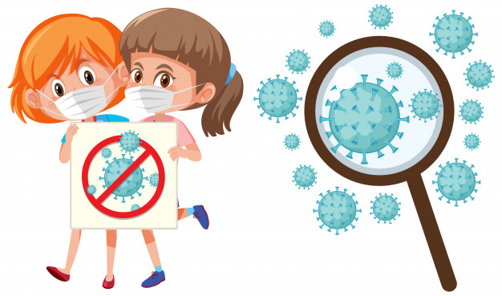

Manténgase al día de la información más reciente sobre el
brote de COVID-19, a la que puede acceder en el sitio web
de la OMS y a través de las autoridades de salud pública
pertinentes a nivel nacional y local. La COVID-19 sigue
afectando principalmente a la población de China, aunque se
han producido brotes en otros países. La mayoría de las
personas que se infectan padecen una enfermedad leve y se
recuperan, pero en otros casos puede ser más grave. Cuide su
salud y proteja a los demás a través de las siguientes medidas:

Lávese las manos frecuentemente
Adopte medidas de higiene respiratoria
Mantenga el distanciamiento social
Evite tocarse los ojos, la nariz y la boca
Si tiene fiebre, tos y dificultad para respirar, solicite atención médica a tiempo
Manténgase informado y siga las recomendaciones de los profesionales sanitarios